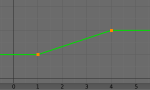

Transformation Constraint¶
This constraint is more complex and versatile than the other "transform" constraints. It allows you to map one type of transform properties (i.e. location, rotation or scale) of the target, to the same or another type of transform properties of the owner, within a given range of values (which might be different for each target and owner property). You can also switch between axes, and use the range values not as limits, but rather as "markers" to define a mapping between input (target) and output (owner) values.
So, e.g. you can use the position of the target along the X axis to control the rotation of the owner around the Z axis, stating that 1 BU along the target X axis corresponds to 10 BU around the owner Z axis. Typical uses for this include gears (see note below), and rotation based on location setups.
Options¶
Transformation panel.
- Target
- Data ID used to select the constraints target, and is not functional (red state) when it has none.
- Extrapolate
By default, the min and max values bound the input and output values; all values outside these ranges are clipped to them. When you enable this button, the min and max values are no longer strict limits, but rather "markers" defining a proportional (linear) mapping between input and corresponding output values. Let us illustrate that with two graphs Fig. The Extrapolate principles.. In these pictures, the input range (in abscissa) is set to (1.0 to 4.0), and its corresponding output range (in ordinate), to (1.0 to 2.0). The yellow curve represents the mapping between input and output.
The Extrapolate principles.¶ Extrapolate disabled: the output values are bounded inside the (1.0 to 2.0) range.

Extrapolate enabled: the output values are "free" to proportionally follow the input ones.
{kind=link}
Source¶
It contains the input (from target) settings.
- Map From
The radio buttons allow you to select which type of property to use.
Location, Rotation, and Scale
- From
- Independently for each axis (X, Y, and Z) the min and max number buttons control the lower and upper bounds of the input value range. Note that if a min value is higher than its corresponding max value, the constraint behaves as if it had the same value as the max one.
- Source to Destination Mapping
- The three Axis Mapping selectors allow you to select which input axis to map to, respectively (from top to bottom), the X, Y and Z output (owner) axes.
Destination¶
It contains the output (to owner) settings.
- Map To
The three radio buttons allow you to select which type of property to control.
Location, Rotation, and Scale
- To
- The min and max number buttons control the lower and upper bounds of the output value range, independently for each mapped axis. Note that if a min value is higher than its corresponding max value, the constraint behaves as if it had the same value as the max one.
- Space
- Standard conversion between spaces.
Ghi chú
When mapping transform properties to location (i.e. Location, Destination button is enabled), the owner's existing location is added to the result of evaluating this constraint (exactly like when the Offset button of the Copy Location constraint is enabled...).
Conversely, when mapping transform properties to rotation or scale, the owner's existing rotation or scale is overridden by the result of evaluating this constraint.
When using the rotation transform properties of the target as input, whatever the real values are, the constraint will always "take them back" into the (-180 to 180) range. E.g. if the target has a rotation of 420 degrees around its X axis, the values used as X input by the constraint will be:
\(((420 + 180) modulo 360) - 180 = 60 - ...\)
This is why this constraint is not really suited for gears!
Similarly, when using the scale transform properties of the target as input, whatever the real values are, the constraint will always take their absolute values (i.e. invert negative ones).
When a min value is higher than its corresponding max one, both are considered equal to the max one. This implies you cannot create "reversed" mappings...